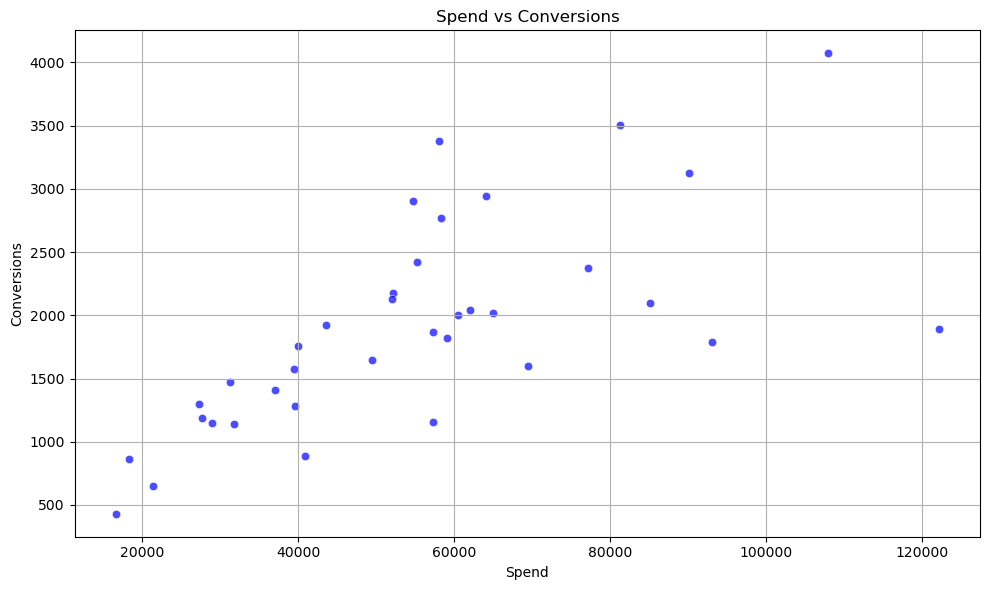
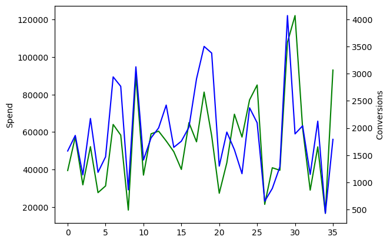

Exploratory Plots and Diagnostics
Task
Build and validate an analysis focused on exploratory plots and diagnostics.
Why this task is required
Support budget and planning decisions by quantifying patterns and expected returns, and by reducing guesswork in channel or forecasting choices.
What I am doing to take care of it
I cleaned and joined the input data, explored trends and relationships, built the model or comparison, and validated the results with diagnostic checks. Then I translated the findings into decisions a stakeholder can act on.
Charts and insights



Notebook insights
This notebook contains analysis and charts. The written insight cells were limited. The charts and code below show the approach and results.
Final outcome for the business
Final business outcome is documented in the notebook narrative when available. If the notebook does not include a final summary cell, this page highlights the measurable learnings and what I would recommend next.
Pros
Fast signal discovery Useful for stakeholder storytelling Often correlational Needs follow up tests for causality
Cons
Fast signal discovery Useful for stakeholder storytelling Often correlational Needs follow up tests for causality
Stakeholder insights and comments
Use as input to MMM and experiments Suggested stakeholder framing: what changed, why it matters, and what decision to take next. Turn findings into a test plan
Advice to management
Use as input to MMM and experiments Suggested stakeholder framing: what changed, why it matters, and what decision to take next. Turn findings into a test plan
Improvements and next steps
Add stronger validation and experiment design
Technologies used
- matplotlib
- pandas
- seaborn